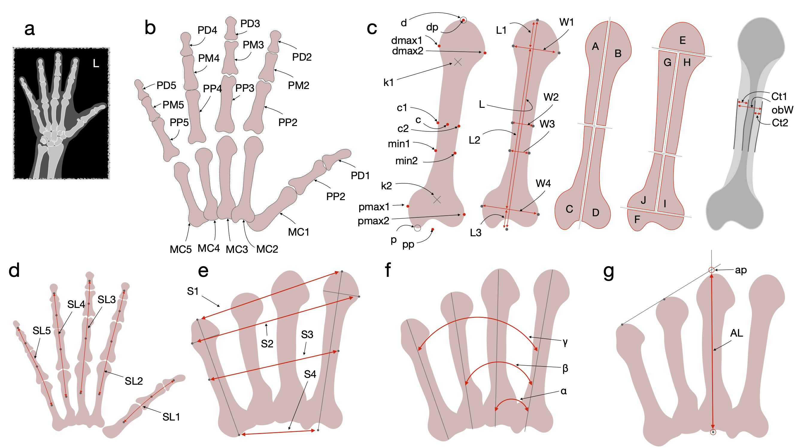
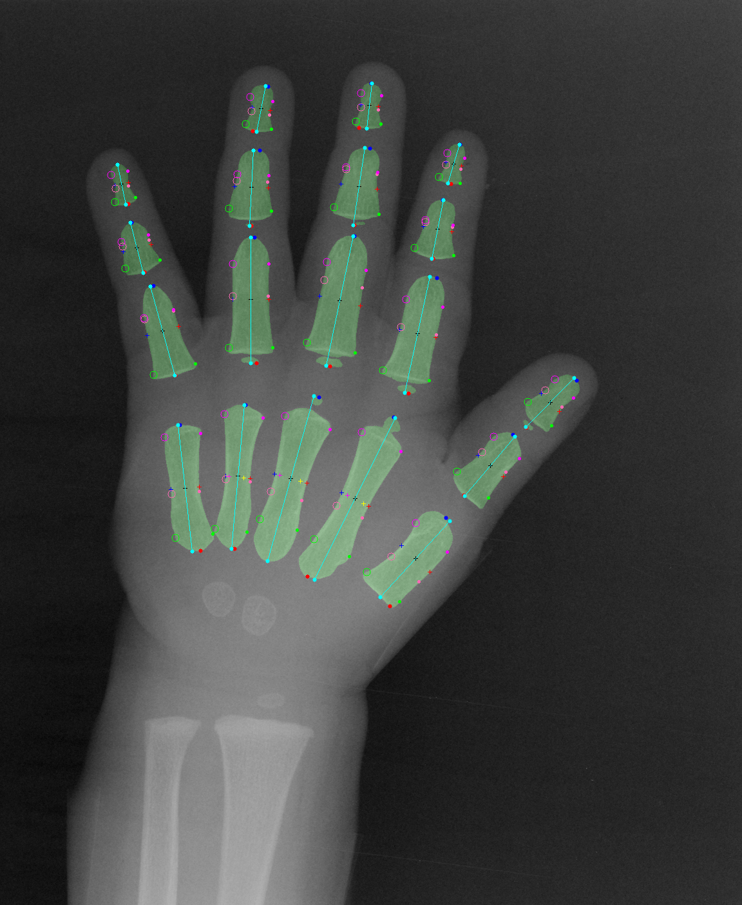
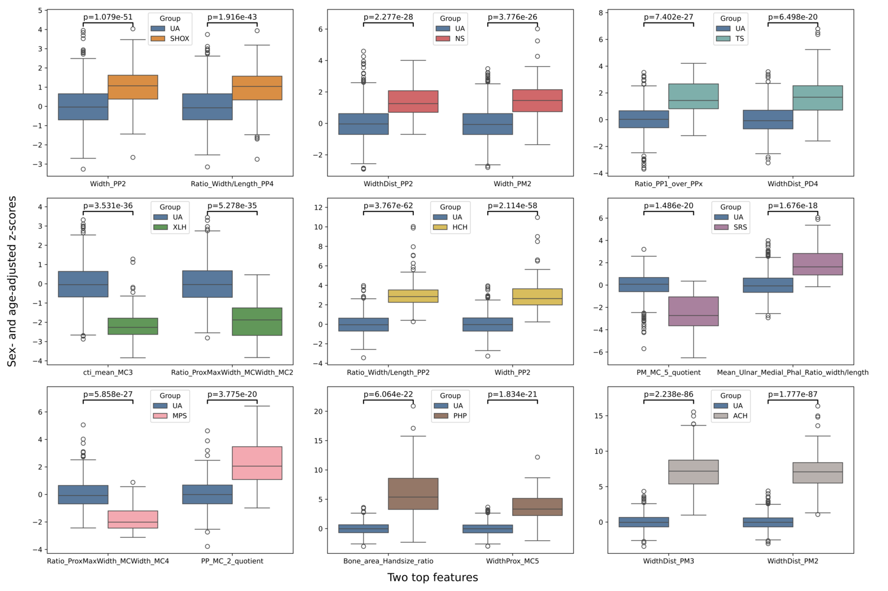

Morphometric Bone2Gene
Novel morphometric features in hand radiographs for diagnostic application.
Paper [LINK TO BE ADDED] GitHub Repository Bone2Gene Project Website
Background and Motivation
Hand radiographs are routinely used by pediatric endocrinologists to assess bone age in children with atypical growth, pubertal or other physical maturation disorders. However, their potential for differential diagnosis of growth disorders has not been fully exploited. Here we introduce novel and well-defined morphometric measurements in hand radiographs for diagnostic applications and we demostrate their power for differentiating nine common endocrine disorders and skeletal dysplasias (achondroplasia, hypochondroplasia, X-linked hypophosphatemia, pseudohypoparathyroidism, mucopolysaccharidosis, Turner syndrome, Silver–Russell syndrome, and Noonan syndrome) from one another and from healthy controls.


Higher-Dimensional Standardized Phenotypic Space
We define and extract a total of 550 reproducible measurements across the 19 metacarpal and phalangeal bones. Figure below shows the radial projection of the 550-dimensional higher-dimensional standardized phenotypic space (HSPS) for all 10 cohorts in our study across all three sample sets (healthy training/reference, affected training set, and test set). The radial projection uses the angular position from the UMAP for each radiographs representation relative to the zero vector (see Supplementary information Figure 2), while the radius corresponds to the r_HSPS, with the zero vector at the center where the radius equals zero. The solid circle represents the mean r_HSPS of the Unaffected (UA) reference/train set (23.03), the dashed circle indicates mean + 1 SD (26.76), and the dotted line circle represents mean + 2 SD (30.49).

UMAP projection of the 550-dimensional interpretable morphometric feature space
Each point in Figure 5 (below) represents a single morphometric feature embedded into two dimensions using UMAP (Manhattan distance). White points with black outlines indicate features not selected as most discriminative for any specific condition (“other features”). Colored points highlight the top discriminative features for individual disease cohorts (UA vs. SHOX, SRS, NS, XLH, TS, HCH, MPS, PHP, and ACH), as identified in the corresponding one-vs-UA SVM models. The clustering illustrates that disease-specific features occupy distinct regions within the global feature space.UMAP visualization showed that discriminative features for achondroplasia and hypochondroplasia cluster closely together, while features associated with XLH and MPS partially overlap, whereas TS displayed a more widely distributed feature pattern